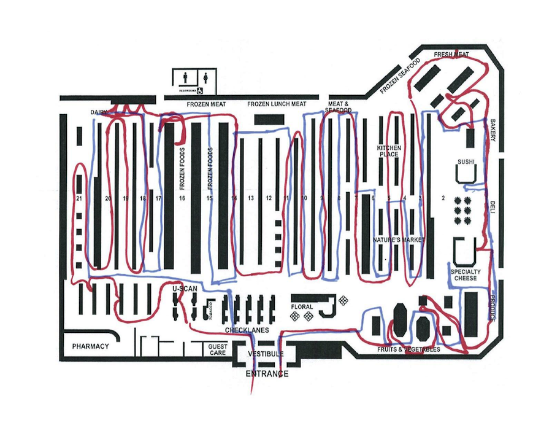
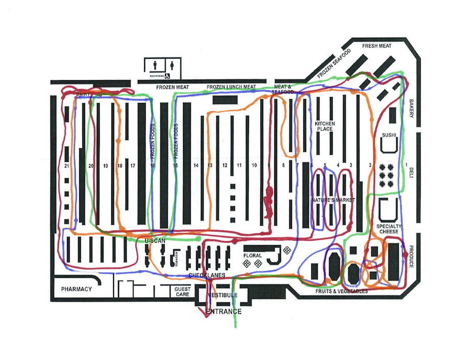

The current user experience for grocery shopping is often confusing and frustrating. Our team looked at redesigning that experience to be efficient and enjoyable.
Initial Survey
We began by finding out current frustrations that occur during the grocery shopping experience. From an initial survey, we identified the following needs:
- I always forget something
- I don’t want to spend too much money
- I can’t find what I’m looking for
- I feel overwhelmed when choosing between items
- I dislike the store environment and having to spend time there
- I don’t know which store has the best prices/selection
- The store does not have what I want
- I want an ethically responsible product
- I want more information about the food I’m buying
- I want to buy healthy items without spending too much
- I find it difficult to come up with new recipes
- The total price is higher than expected, but I feel bad removing items during checkout
On-site Interviews
We also visited a grocery store to conduct on-site interviews and asked people to give a quick retrospective account of their grocery shopping experience that day. One employee told us that people ask where items are located every three minutes. We also timed the checkout time of several customers and found on average the process took 8 minutes.
Make Tool

Next we used a make tool to validate our findings and find more about the different types of shoppers. We gave participants a map of a grocery store and asked them to sketch out their route through the store while thinking aloud.
From this exercise, we identified two main groups of shoppers:
Planners tend to have a structured list and go down most aisles. They are efficient and prefer self-checkout.
Grabbers tend to be more spontaneous and often shop without a list. They stick to the perimeter of the store and generally buy fewer items.
Concept Maps
We created concept maps to both visualize the current grocery shopping process and to also understand how the system we were designing could help to alleviate some of the current frustrations. We highlighted the user load to understand how our system would help the user.
The concept map of the current grocery shopping experience placed a heavy load on the user (highlighted in pink)

We focused our solution on reducing the cognitive load for grocery shoppers

Solution

Our final solution can be seen in action in the video above. We designed a scanner and smartphone dock to accompany a smartphone app. The app would help shoppers to create and manage lists on their smartphones and the scanner would allow shoppers to ring up items as they go, eliminating the need for checking out. The final solution saves time and money for both consumers and grocery stores and could be implemented with minimal overhaul to current shopping carts and infrastructure.